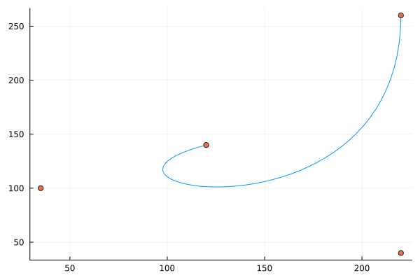

SpecialPolynomials.jl
Documentation for SpecialPolynomials.jl.
Overview
This package provides a number of different polynomial types to represent polynomials, extending the Polynomials package.
SpecialPolynomials.AbstractSpecialPolynomial — TypeAbstractSpecialPolynomial{T}An abstract type to distinguish the different polynomial types in this package.
The concrete types specify different bases for the space of polynomials of degree n or less.
This package includes:
- several classic orthogonal polynomials.
- Newton and Lagrange interpolating polynomials
- Bernstein polynomials
As many of the methods for the base Polynomials class are directly coded if possible, but quite a few depend on conversion to the base Polynomial type (which uses the standard polynomial basis).
Orthogonal polynomials
SpecialPolynomials.AbstractOrthogonalPolynomial — TypeAbstractOrthogonalPolynomial{T}Type to represent systems of orthogonal polynomials. These polynomials have several properties, including an accompanying inner product satsifying ⟨yᵢ, yⱼ⟩ = cᵢδᵢⱼ.
In addition to methods inherited from the underlying AbstractPolynomial type, orthogonal polynomial types may have methods weight_function, generating_function, leading_term, norm2,jacobimatrix, andgaussnodes_weights`, though none are exported.
Subtypes of AbstractCOP <: AbstractOrthogonalPolynomial utilize the fact that the basis polynomials satisfy
(ax² + bx + c)yᵢ''(x) + (dx+e)yᵢ'(x) + λᵢyᵢ(x) = 0 (or a discrete analogue)
where the structural relations are functions of a,b,c,d,e. These allow default definitions for polynomial evaluation, addition, multiplication, differentiation, integration, and conversion to and from the Polynomial type (the FallingFactorial type in the discrete c case),
A key structural relation is the three-term recursion, yᵢ₊₁ = (Aᵢx + Bᵢ)yᵢ - Cᵢyᵢ₋₁. For systems specfied by a weight function, the values of Aᵢ, Bᵢ, and Cᵢ can be generated, yielding formulas for polynomial evaluation, addition, and conversion to the Polynomial type throughe evaluation.
SpecialPolynomials.AbstractCCOP — TypeAbstractCCOP{T,N} <: AbstractCOP{T,N}Following Koepf and Schmersau, a family y(x)=p_n(x)=k_x⋅x^n + ... for n ∈ {0, 1,…}, k_n ≠ 0 of polynomials is a family of classic continuous orthogonal polynomials if each is a solution of the differential equation
(a⋅x²+b⋅x+c) ⋅ yᵢ'' + (d⋅x + e) ⋅ yᵢ' + λᵢ⋅ yᵢ = 0.
A family is characterized, up to choice of leading term, by the 5 coefficients: a,b,c,d,e. Let σ = (a⋅x²+b⋅x+c), τ = (d⋅x + e).
From these 5 coefficients several structural equations are represented. For example the three-point recusion.
P₍ᵢ₊₁) = (Aᵢ⋅x + Bᵢ) * Pᵢ - Cᵢ * P₍ᵢ₋₁₎,
where Aᵢ,Bᵢ,Cᵢ can be represented in formulas involving just a,b,c,d,e and i.
Rearranging gives the structural equation:
x⋅p_n = [an, bn, cn] ⋅ [p_{n+1}, p_n, p_{n-1}] (Eqn (7))
The other structural equations are (equation references are from Koepf and Schmersau):
σ⋅p'_n = [αn, βn, γn] ⋅ [p_{n+1}, p_n, p_{n-1}] (Eqn (9), n ≥ 1)
p_n = [ân, b̂n, ĉn] ⋅ [p'_{n+1}, p'_n, p'_{n-1}] (Eqn (19))
x⋅p'_n = [αᴵn, βᴵn, γᴵn] ⋅ [p'_{n+1}, p'_n, p'_{n-1}] (Eqn (14))
Using (7), Clenshaw polynomial evaluation using the three point recursion is defined.
Using (19), expressions for derivatives are found.
Using (19), expressions for integration are found (p7).
Using their theorems 2,4, and 5, connection coefficients, C(n,m) satisfying P_n(x) = ∑ C(n,m) Q_m(x) (n ≥ 0, 0 ≤ m ≤ n) are found. These allow fallback definitions for convert(Polynomial,p), convert(P, p::Polynomial), convert(P{α…}, p::P(β…)) and through composition polynomial multiplication, p*q.
Subtypes of AbstractCCOP are created through the @register0 or @registerN macros, where the N macro is used if parameters are needed to describe the family.
If non-monic versions are desired, then the leading term can be specified through kn() (which by default is defined by the method k1k0(P,i), the ratio of kᵢ₊₁/kᵢ). The @register_monic macro is useful for creating monic versions through method delegation from the common non-monic systems. Similarly, the @register_shifted macro is useful to provide shifted versions (cf. ShiftedLegendre).
Registering a system, defining an abcde method, and optionally defining k1k0 is usually sufficient to define a new system, though the general equations may need specializations when algebraic cancellation is required.
The defaults for evaluation and multplication are generally an order of magnitude slower than a directly defined function. For some families this is done (e.g. Chebyshev,ChebyshevU, Hermite, Laguerre), but not all.
Example
For this example, the value of Bn at 0 needs help:
julia> using Polynomials, SpecialPolynomials
julia> const SP=SpecialPolynomials
SpecialPolynomials
julia> SP.@register0 MonicLegendre′ SP.AbstractCCOP0
julia> SP.:ϟ(::Type{<:MonicLegendre′}) = Legendre
julia> SP.@register_monic MonicLegendre′ # use ϟ to delegate methods
julia> 𝐐 = Rational{Int}
Rational{Int64}
julia> x = variable(Polynomial{𝐐})
Polynomial(x)
julia> [basis(MonicLegendre′{𝐐}, i)(x) for i in 0:5]
6-element Array{Polynomial{Rational{Int64}},1}:
Polynomial(1//1)
Polynomial(x)
Polynomial(-1//3 + x^2)
Polynomial(-3//5*x + x^3)
Polynomial(3//35 - 6//7*x^2 + x^4)
Polynomial(5//21*x - 10//9*x^3 + x^5)Koekoek and Swarttouw present an encyclopedia of formula characterizing families of orthogonal polynomials.
SpecialPolynomials.AbstractCDOP — Type AbstractCDOP{T,N} <: AbstractCOP{T,N}Following Koepf and Schmersau, a family y(x)=p_n(x)=k_x⋅x^n + ... for n ∈ {0, 1,…}, k_n ≠ 0 of polynomials is a family of classic discrete orthogonal polynomials if it is a solution of a differential equation
(a⋅x²+b⋅x+c) ⋅ Δ∇y + (d⋅x + e) ⋅ ∇' + λᵢ⋅ y = 0,
where Δy(x) = y(x+1) - y(x) and ∇y(x) = y(x) - y(x-1).
A family is characterized by the 5 coefficients: a,b,c,d,e. Let σ = (a⋅x²+b⋅x+c), τ = (d⋅x + e).
As in the classical-continuous-orthogonal-polynomial case AbstractCCOP, from these 5 values the cofficients in the there-point recursion, and other structural equations can be represented. These allow polynomial multiplication, integration, differentiation, conversion, etc. to be defined generically.
Koekoek and Swarttouw present an encyclopedia of formula characterizing families of orthogonal polynomials.
For example, on p29 they give formulas for Hahn polynomials through:
n(n+α+β+1)y(x) = B(x)y(x+1) -[B(x)+D(x)]y(x) + D(x)y(x-1), with explicit values for B and D. Reexpressing gives: BΔy(x) - D∇y(x) -λ y(x) = 0. From the rexpressed Eqn (4) for Koepf & Schemersau we have the identification: σ+τ = B; σ=D, so τ=B-D. From this a,b,c,d,e can be gleaned.
The above, is termed the eigevalue equation (e.g. Goertz and Offner), as it can be reexpressed as
Δ(D(x)⋅ω(x)⋅∇yᵢ(x) = λᵢ⋅ω(x)⋅yᵢ(x)
Implemented polynomial types
Classical continuous orthogonal polynomials
There are several classical continuous orthogonal polynomials available:
SpecialPolynomials.Legendre — TypeLegendre{T}Implements the Legendre polynomials. These have weight function w(x) = 1 over the domain [-1,1].
julia> using Polynomials, SpecialPolynomials
julia> p = Legendre([1,2,3])
Legendre(1⋅P₀(x) + 2⋅P₁(x) + 3⋅P₂(x))
julia> convert(Polynomial, p)
Polynomial(-0.5 + 2.0*x + 4.5*x^2)
julia> p2m, p2m1 = basis.(Legendre, (8,9)) # evaluation P_{2m+k}(-1) = (-1)^k
(Legendre(1.0⋅P₈(x)), Legendre(1.0⋅P₉(x)))
julia> p2m(-1) == 1
false
julia> p2m1(-1) == -1
false
julia> n = 5 # verify Rodrigues' formula
5
julia> x = Polynomial(:x)
Polynomial(x)
julia> derivative((x^2-1)^n, n) - 2^n * factorial(n) * basis(Legendre, n)
Polynomial(1.8189894035458565e-12*x)
julia> p4, p5 = basis.(Legendre, (4,5)) # verify orthogonality of P₄,P₅
(Legendre(1.0⋅P₄(x)), Legendre(1.0⋅P₅(x)))
julia> SpecialPolynomials.innerproduct(Legendre, p4, p5)
-1.543670556388031e-16SpecialPolynomials.Chebyshev — TypeChebyshev{<:Number}(coeffs::AbstractVector, var=:x)
Chebyshev polynomial of the first kind.
Construct a polynomial from its coefficients a, lowest order first, optionally in terms of the given variable x. x can be a character, symbol, or string.
Examples
julia> using Polynomials, SpecialPolynomials
julia> Chebyshev([1, 0, 3, 4])
Chebyshev(1⋅T₀(x) + 3⋅T₂(x) + 4⋅T₃(x))
julia> Chebyshev([1, 2, 3, 0], :s)
Chebyshev(1⋅T₀(s) + 2⋅T₁(s) + 3⋅T₂(s))
julia> one(Chebyshev)
Chebyshev(1.0⋅T₀(x))This is copied from the ChebyshevT example from the Polynomials package by Miles Lucas.
The sample chapter available online of Numerical Methods for Special Functions" by Amparo Gil, Javier Segura, and Nico Temme gives a very nice overview of these polynomials.
SpecialPolynomials.ChebyshevU — TypeChebyshevU{T}Implements the Chebyshev polynomials of the second kind. These have weight function w(x) = sqrt(1-x^2) over the domain [-1,1].
julia> using Polynomials, SpecialPolynomials
julia> p = ChebyshevU([1,2,3])
ChebyshevU(1⋅U₀(x) + 2⋅U₁(x) + 3⋅U₂(x))
julia> convert(Polynomial, p)
Polynomial(-2 + 4*x + 12*x^2)
julia> derivative(p)
ChebyshevU(4.0⋅U₀(x) + 12.0⋅U₁(x))
julia> roots(p)
2-element Array{Float64,1}:
-0.6076252185107651
0.27429188517743175SpecialPolynomials.Laguerre — TypeLaguerre{α, T <: Number}
The Laguerre polynomials have weight function x^α * exp(-x) over the domain [0, oo). The parameter α is specified through the constructor.
julia> using Polynomials, SpecialPolynomials
julia> p = Laguerre{1/2}([1,2,3])
Laguerre{0.5}(1⋅Lᵅ₀(x) + 2⋅Lᵅ₁(x) + 3⋅Lᵅ₂(x))
julia> convert(Polynomial, p)
Polynomial(9.625 - 9.5*x + 1.5*x^2)The Laguerre polynomials are the case α=0.
julia> using Polynomials, SpecialPolynomials
julia> p = Laguerre{0}([1,2,3])
Laguerre{0}(1⋅L₀(x) + 2⋅L₁(x) + 3⋅L₂(x))
julia> convert(Polynomial, p)
Polynomial(6.0 - 8.0*x + 1.5*x^2)
julia> phi(u, i) = derivative(u) - u # verify Rodrigues' formula for small n; n! L_n = (d/dx-1)^n x^n
phi (generic function with 1 method)
julia> x = Polynomial(:x)
Polynomial(x)
julia> n = 7
7
julia> factorial(n) * basis(Laguerre{0}, n) - foldl(phi, 1:n, init=x^n)
Polynomial(-5.4569682106375694e-12 + 1.4551915228366852e-11*x - 7.275957614183426e-12*x^2)SpecialPolynomials.Hermite — TypeHermiteThe Hermite polynomials have two versions the physicists (Hermite or H) and the probablalists (ChebyshevHermite or Hₑ). They are related through Hᵢ(x) = 2^(i/2) Hₑᵢ(√2 x).
The Hermite polynomials have weight function w(x)=exp(-x^2/2) and domain the real line.
Examples
julia> using Polynomials, SpecialPolynomials
julia> x = variable(Polynomial{Rational{Int}})
Polynomial(x)
julia> [basis(Hermite, i)(x) for i in 0:5]
6-element Array{Polynomial{Float64},1}:
Polynomial(1.0)
Polynomial(2.0*x)
Polynomial(-2.0 + 4.0*x^2)
Polynomial(-12.0*x + 8.0*x^3)
Polynomial(12.0 - 48.0*x^2 + 16.0*x^4)
Polynomial(120.0*x - 160.0*x^3 + 32.0*x^5)
julia> [basis(ChebyshevHermite, i)(x) for i in 0:5]
6-element Array{Polynomial{Float64},1}:
Polynomial(1.0)
Polynomial(1.0*x)
Polynomial(-1.0 + 1.0*x^2)
Polynomial(-3.0*x + 1.0*x^3)
Polynomial(3.0 - 6.0*x^2 + 1.0*x^4)
Polynomial(15.0*x - 10.0*x^3 + 1.0*x^5)The Hermite family needs help, as the computed values for Bn,and,Cn are both 0.
SpecialPolynomials.ChebyshevHermite — TypeChebyshevHermiteType for the Probabalist's Hermite polynomials.
SpecialPolynomials.Gegenbauer — TypeGegenbauer{α, T <: Number}
The Gegenbauer polynomials have weight function (1-x^2)^(α-1/2) over the domain [-1,1]. The parameter α is specified in the constructor. These are also called the ultra-spherical polynomials. The Legendre polynomials are the specialization Gegenbauer{1/2}.
julia> using Polynomials, SpecialPolynomials
julia> p = Gegenbauer{1/2}([1,2,3])
Gegenbauer{0.5}(1⋅Cᵅ₀(x) + 2⋅Cᵅ₁(x) + 3⋅Cᵅ₂(x))
julia> convert(Polynomial, p)
Polynomial(-0.5 + 2.0*x + 4.5*x^2)SpecialPolynomials.Jacobi — TypeJacobi{α, β, T}Implements the Jacobi polynomials. These have weight function w(x) = (1-x)^α ⋅ (1+x)^β over the domain [-1,1]. Many orthogonal polynomial types are special cases. The parameters are specified to the constructors:
julia> using Polynomials, SpecialPolynomials
julia> p = Jacobi{-1/2, -1/2}([0,0,1])
Jacobi{-0.5,-0.5}(1⋅Jᵅᵝ₂(x))
julia> convert(Polynomial, p)
Polynomial(-0.375 + 0.75*x^2)
julia> monic(p) = (q=convert(Polynomial,p); q/q[end])
monic (generic function with 1 method)
julia> monic(p) ≈ monic(basis(Chebyshev, 2))
true
SpecialPolynomials.Bessel — TypeBessel{α}Implements the Bessel polynomials, introduced by Krall and Frink (with b=2). The case a=2 corresponds to the Bessel polynomials of Wikipedia. The Bessel polynomials are not orthogonal over a domain of the real line, rather over an arbitray curve in the complex plane enclosing the origin. The weight function is ρ(x)=(2πi)^(-1)∑Γ(α)/Γ(α+n-1)(-β/x)^n, where β=2.
julia> using Polynomials, SpecialPolynomials
julia> 𝐐 = Rational{Int}
Rational{Int64}
julia> x = variable(Polynomial{𝐐})
Polynomial(x)
julia> [basis(Bessel{3//2, 𝐐}, i)(x) for i in 0:5]
6-element Array{Polynomial{Rational{Int64}},1}:
Polynomial(1//1)
Polynomial(1//1 + 3//4*x)
Polynomial(1//1 + 5//2*x + 35//16*x^2)
Polynomial(1//1 + 21//4*x + 189//16*x^2 + 693//64*x^3)
Polynomial(1//1 + 9//1*x + 297//8*x^2 + 1287//16*x^3 + 19305//256*x^4)
Polynomial(1//1 + 55//4*x + 715//8*x^2 + 10725//32*x^3 + 182325//256*x^4 + 692835//1024*x^5)SpecialPolynomials.ShiftedLegendre — TypeShiftedLegendreType for the shifted Legendre polynomials: Pˢᵢ(x) = Pᵢ(2x-1) for x ∈ [0,1].
Classical discrete orthogonal polynomials
There are several classical discrete orthogonal polynomials available:
SpecialPolynomials.Charlier — TypeCharlier{μ}References: Koekoek and Swarttouw §1.12
SpecialPolynomials.Krawchouk — Type Krawchouk{p,𝐍}Also spelled Krawtchouk, Kravhcuk,….
References: Koekoek and Swarttouw §1.10; see also Coleman for a different parameterization.
SpecialPolynomials.Meixner — TypeMeixner{γ,μ}References: Koekoek and Swarttouw §1.9
SpecialPolynomials.Hahn — TypeHahn{α,β,𝐍}References: Koekoek and Swarttouw §1.5
In Koekoek and Swarttouw sections 1.3, 1.4, and 1.6 are other Hahn-type polynomials, not implemented here.
SpecialPolynomials.DiscreteChebyshev — TypeDiscreteChebyshevThis uses p22 of to define a two-parameter family of non orthogonal polynomials. See the example in DiscreteWeightFunction for implementing the DiscreteChebyshev polynomials from Wikipedia.
julia> using Polynomials, SpecialPolynomials
julia> import SpecialPolynomials: Δₓ, ∇ₓ
julia> α,β = 1/2, 1
(0.5, 1)
julia> P = DiscreteChebyshev{α,β}
DiscreteChebyshev{0.5,1,T,N} where N where T
julia> i = 5
5
julia> yᵢ = basis(P, i)
DiscreteChebyshev(1.0⋅K⁽ᵅᵝ⁾₅(x))
julia> x = variable(P)
DiscreteChebyshev(- 2.0⋅K⁽ᵅᵝ⁾₀(x) + 2.0⋅K⁽ᵅᵝ⁾₁(x))
julia> a,b,c,d,e = SpecialPolynomials.abcde(P)
(a = 0, b = 0, c = 1, d = 0.5, e = 1)
julia> λᵢ = -(a*i*(i-1) + d*i)
-2.5
julia> Δₓ(∇ₓ(yᵢ)) + (α*x + β) * Δₓ(yᵢ) ≈ -λᵢ*yᵢ # p22: "are not orthogonal, but satisfy the difference equation..."
trueSpecialPolynomials.FallingFactorial — TypeFallingFactorial{T}Construct a polynomial with respect to the basis x⁰̲, x¹̲, x²̲, … where xⁱ̲ = x ⋅ (x-1) ⋅ (x-2) ⋯ (x-i+1) is the falling Pochhammer symbol. See Falling factorial for several facts about this polynomial basis.
In Koepf and Schmersau connection coefficients between the falling factorial polynomial system and classical discrete orthogonal polynomials are given.
Examples
julia> using Polynomials, SpecialPolynomials
julia> p = basis(FallingFactorial, 3)
FallingFactorial(1.0⋅x³̲)
julia> x = variable(Polynomial)
Polynomial(x)
julia> p(x) ≈ x*(x-1)*(x-2)
trueSome non-exported methods are available or define each of the classical orthogonal polynomials:
SpecialPolynomials.weight_function — Functionweight_function(p)
weight_function(::Type{P})For an orthogonal polynomial type, a function w with ∫ B_n(t) B_m(t) w(t) dt = 0 when n and m are not equal.
SpecialPolynomials.generating_function — Functiongenerating_function(p)
generating_function(::Type{P})The generating function is a function defined by: (t,x) -> sum(t^n Pn(x) for n in 0:oo).
SpecialPolynomials.abcde — Functionabcde
A named tuple returning the constants a,b,c,d,e for a CCOP type with (a⋅x²+b⋅x+c)*P₍ᵢ₊₂₎'' + (d⋅x + e) * P₍ᵢ₊₁₎ + λᵢ Pᵢ = 0.
SpecialPolynomials.An — FunctionAn(::Type{P},n)Orthogonal polynomials defined by a weight function satisfy a three point recursion formula of the form:
P_{n+1} = (A_n x + B_n) P_{n} - C_n P_{n-1}
If the polynomials are monic, this is usually parameterized as:
π_{n+1} = (x - α̃_n) π_n - β̃_n π_{n-1}
These functions are used through recursion when evaluating the polynomials, converting to Polynomial format, for constructing the Vandermonde matrix, for construction the Jacobi matrix, and elsewhere.
SpecialPolynomials.Bn — FunctionBn(::Type{P},n)
Bn(p::P, n)cf. An()
SpecialPolynomials.Cn — FunctionCn(::Type{P},n)
Cn(p::P, n)cf. An()
SpecialPolynomials.jacobi_matrix — Functionjacobi_matrix(::Type{P}, n)The Jacobi Matrix is a symmetric tri-diagonal matrix. The diagonal entries are the alpha_i values, the off diagonal entries, the square root of the beta_i values. This matrix has the properties that
- the eigenvalues are the roots of the corresponding basis vector. As these roots are important in quadrature, and finding eigenvalues of a symmetric tri-diagonal matrix yields less error than finding the eigenvalues of the companion matrix, this can be used for higher degree basis polynomials.
- the normalized eigenvectors have initial term proportional to the weights in a quadrature formula
SpecialPolynomials.gauss_nodes_weights — Functiongauss_nodes_weights(::Type{P}, n)Returns a tuple of nodes and weights for Gauss quadrature for the given orthogonal type.
When available, the values are computed through the FastGaussQuadratures package.
For some types, a method from A. Glaser, X. Liu, and V. Rokhlin. "A fast algorithm for the calculation of the roots of special functions." SIAM J. Sci. Comput., 29 (2007), 1420-1438. is used.
For others the Jacobi matrix, Jn, for which the Golub-Welsch] algorithm The nodes are computed from the eigenvalues of Jn, the weights a scaling of the first component of the normalized eigen vectors (β_0 * [v[1] for v in vs])
Defining new types
A new polynomial system of classical type can be specified fairly succinctly, provided the 5 constants for the abcde method are known.
Polynomial systems can also be generated through an associated weight function.
SpecialPolynomials.WeightFunction — TypeWeightFunction{T}A type for orthogonal polynomials relative to some weight function. The Wheeler or modified Chebyshev algorithm (Gautschi, Press and Teukolsky) is used to generate the three-term recurrence relation.
If the second order differential equation, σ⋅p'' + τ⋅p' + λ⋅p=- is known, using that to define the polynomial type would be preferred, as then several additional properties follow for free.
The key computation is the modified moment, ∫πⱼ dw where πⱼ is the jth basis vector for an associated monic system, P, and w is the weight function. These values are registered through the @register_weight_function(Type, P, w) macro, as illustrated in the examples.
Example.
Toy example with ChebyshevU being derived using the Chebyshev system.
julia> using Polynomials, SpecialPolynomials
julia> const SP = SpecialPolynomials
SpecialPolynomials
julia> SP.@register0 Toy SP.WeightFunction # register a Toy example
julia> SP.@register_weight_function Toy MonicChebyshev SP.weight_function(ChebyshevU)
julia> [SP.Cn.(Toy, 1:5) SP.Cn.(MonicChebyshevU, 1:5)]
5×2 Array{Float64,2}:
0.25 0.25
0.25 0.25
0.25 0.25
0.25 0.25
0.25 0.25Elliptic orthogonal polynomials on [-1,1]. Demo 2 of Gautschi.
julia> using Polynomials, SpecialPolynomials
julia> const SP=SpecialPolynomials
SpecialPolynomials
julia> N, ω² = 40, 0.999
(40, 0.999)
julia> w(t) = ((1-ω²*t^2)*(1-t^2))^(-1/2)
w (generic function with 1 method)
julia> SP.@register0 WF SP.WeightFunction
julia> SP.@register_weight_function WF MonicChebyshev w
julia> αs, βs = -SP.Bn.(WF, 0:5), SP.Cn.(WF, 0:5);
julia> [αs βs]
6×2 Array{Float64,2}:
-1.87309e-15 9.68226
2.35136e-15 0.793782
-8.51176e-16 0.119868
-3.06017e-15 0.22704
-3.09826e-16 0.241061
2.37296e-15 0.245429The main computation involved in this is the modified moment, νⱼ = ∫πⱼ dw, computed with QuadGK.quadgk. For some examples, this computation can be completed directly and the modified_moment method may be overloaded for the type. This example is from Press and Teukolsky, where the modified moments are given through the function v(j) defined below.
julia> using Polynomials, SpecialPolynomials, SpecialFunctions
julia> const SP=SpecialPolynomials
SpecialPolynomials
julia> w(t) = -log(t)
w (generic function with 1 method)
julia> SP.@register0 WF1 SP.WeightFunction # register type WF1 as a weight function
julia> SP.@register_weight_function WF1 MonicShiftedLegendre w
julia> ν(j) = iszero(j) ? 1 : (-1)^j * gamma(j+1)^2 / (j*(j+1)*gamma(2j+1)) # help out
ν (generic function with 1 method)
julia> SP.modified_moment(::Type{WF1}, j::Int) = ν(j)
julia> αs, βs = -SP.Bn.(WF1, 0:5), SP.Cn.(WF1, 0:5);
julia> [αs βs]
6×2 Array{Float64,2}:
-0.75 1.0
-0.381148 0.423611
-0.504058 0.172646
-0.516236 0.203166
-0.517168 0.222419
-0.513854 0.239667SpecialPolynomials.DiscreteWeightFunction — TypeDiscreteWeightFunctionFor a discrete measure, dλ = ∑ wᵢ δ(x - xᵢ), specified through two vectors, xs and ws, a collection of monic orthogonal polynomials is produced through Darboux's formula for α_n and β_n using the 3-term recurrence defined by π_{n+1} = (x-α_n)⋅π_n - β_n⋅π_{n-1} (An=1, Bn=-α_n, Cn=β_n) and the discrete Stieltjes method Guatschi §3.1.
Example
Discrete Chebyshev by its weight function (uniform on 0,1,…,N-1)
julia> using Polynomials, SpecialPolynomials
julia> const SP = SpecialPolynomials;
julia> N = 9
9
julia> xs, ws = collect(0:N-1), ones(N); # w(x) = ∑ wⱼ⋅δ(x-xⱼ)
julia> SP.@register0 DWF DiscreteWeightFunction
julia> SP.@register_discrete_weight_function(DWF, xs, ws)
julia> [SP.Bn.(DWF, 0:N-1) SP.Cn.(DWF, 0:N-1)]
9×2 Array{Float64,2}:
-4.0 9.0
-4.0 6.66667
-4.0 5.13333
-4.0 4.62857
-4.0 4.12698
-4.0 3.53535
-4.0 2.83217
-4.0 2.01026
-4.0 1.06667
julia> i,j = 3,4; ## check that ∫pᵢpⱼdw = 0 for i,j=3,4
julia> sum(basis(DWF,i)(x) * basis(DWF,j)(x) * w for (x,w) in zip(xs, ws))
5.684341886080802e-14
julia> ## Gogin, Hirvensalo (https://doi.org/10.1007/s10958-017-3410-8) characterization
D(k,N,x) = sum((-1)^l * binomial(k+l,k) * binomial(N-l,k-l) * SP.generalized_binomial(x,l) for l in 0:k)
D (generic function with 1 method)
julia> x = variable()
Polynomial(x)
julia> ps,qs = [D(k,N-1,x) for k in 0:N-1], [basis(DWF, k)(x) for k in 0:N-1];
julia> all(qs .* [p[end] for p in ps] .≈ ps)
trueInterpolating polynomials
SpecialPolynomials.AbstractInterpolatingPolynomial — TypeAbstractInterpolatingPolynomial{T}Abstract type for interpolating polynomials.
These are polynomial representations of p(x) satisfying p(x_i) = y_i for a specified set of x values and y values.
For a collection of points (x_0,y_0), ..., (x_n, y_n) there is a unique polynomial of degree n or less satisfying p(x_i)=y_i. This fact allows the specification of p(x) using a vector of coefficients relative to some set of basis vectors.
The two main types, Lagrange and Newton, store the nodes within the instance. In particular, the type does not contain all the information needed to describe the family. So methods like convert(::Type, p) will not work. Use fit(Type, xs, p), as appropriate, instead.
SpecialPolynomials.Lagrange — TypeLagrange{N, S, R, T}Represent a polynomial in Lagrange form using nodes xs, weights ws, and coefficients coeffs. The Lagrange form does polynomial interpolation between xs and ys through p(x) = Σ_{0..n} ℓ_i(x) y_i, where if ℓ(x) = prod(x-x_i), w_i = 1/prod_{j≠i}(x_i - x_j), then ℓ_i(x) = ℓ(x) w_i/(x-x_i). The ℓ_i satisfy ℓ_i(x_j) = δ_{ij}, so the coefficients are just the ys.
julia> using Polynomials, SpecialPolynomials
julia> p = Lagrange([1,2,3], [1,2,3])
Lagrange(1⋅ℓ^2_0(x) + 2⋅ℓ^2_1(x) + 3⋅ℓ^2_2(x))
julia> p.([1,2,3]) # the coefficients
3-element Array{Int64,1}:
1
2
3
julia> convert(Polynomial, p)
Polynomial(1.0*x)The instances hold the nodes and weights, which are necessary for representation, so the type alone can not be used for functions such as variable or convert(Lagrange, ...). For the former we can use an instance, for the latter we can use fit:
julia> p = Lagrange([1,2,3], [1,2,3])
Lagrange(1⋅ℓ^2_0(x) + 2⋅ℓ^2_1(x) + 3⋅ℓ^2_2(x))
julia> variable(p)
Lagrange(1⋅ℓ^2_0(x) + 2⋅ℓ^2_1(x) + 3⋅ℓ^2_2(x))
julia> q = Polynomial([0,0,1])
Polynomial(x^2)
julia> qq = fit(Lagrange, p.xs, q)
Lagrange(1⋅ℓ^2_0(x) + 4⋅ℓ^2_1(x) + 9⋅ℓ^2_2(x))
julia> convert(Polynomial, qq)
Polynomial(1.0*x^2)Interpolating polynomials suffer from the Runge phenomenon unless the nodes are well chosen. For P=Chebyshvev and P=ChebyshevU, the function SpecialPolynomials.lagrange_barycentric_nodes_weights(P, n) will return a good choice of n+1 points over [-1,1] along with precomputed weights.
julia> xs, ws = SpecialPolynomials.lagrange_barycentric_nodes_weights(Chebyshev, 64);
julia> f(x) = exp(-x)*sinpi(x)
f (generic function with 1 method)
julia> p = fit(Lagrange, xs, f.(xs));
julia> degree(p)
64
julia> maximum(abs.(f(x) - p(x) for x in range(-1, 1, length=20))) <= 1e-14
trueThe above example is more directly done through fit(Chebyshev, f, 64), though the resulting polynomial will reference a different basis.
SpecialPolynomials.Newton — TypeNewton{S,T}A Newton interpolating polynomial uses a basis 1, (x-x_0), (x-x_0)(x-x_1), ..., (x-x0)(x-x1)⋅⋅⋅(x-x_{n-1}) and coefficients (in forward form) f[x_0], f[x_0,x_1], ...,f[x_0,...,x_n]. The Newton class stores the nodes (after sorting) and the Newton tableau used to generate the coefficients on fitting.
The easiest way to construct an instance is with fit, as in:
julia> using Polynomials, SpecialPolynomials
julia> xs = [1,2,3,4]; f(x)= x^3 - 2x + 1;
julia> p = fit(Newton, xs, f)
Newton(5.0⋅p_1(x) + 6.0⋅p_2(x) + 1.0⋅p_3(x))
julia> p.(xs) == f.(xs) # p interpolates
true
julia> convert(Polynomial, p)
Polynomial(1.0 - 2.0*x + 1.0*x^3)Other polynomials
SpecialPolynomials.Bernstein — TypeBernstein{N, T}A Bernstein polynomial is a polynomial expressed in terms of Bernstein basic polynomials. For each degree, 𝐍, this is a set of 𝐍+1 degree 𝐍 polynomials of the form: β_{𝐍,ν} = (ν choose 𝐍) x^ν (1-x)^{𝐍-ν}, 0 ≤ x ≤ 1.
The Bernstein{𝐍,T} type represents a polynomial of degree 𝐍 or less with a linear combination of the basis vectors using coefficients of type T.
julia> using Polynomials, SpecialPolynomials
julia> p = basis(Bernstein{3}, 2)
Bernstein(1.0⋅β₃,₂(x))
julia> convert(Polynomial, p)
Polynomial(3.0*x^2 - 3.0*x^3)StaticUnivariatePolynomials Offers a more performant version.
Example of a Bezier curve (parameterized by r(t) = ∑₀ᴺ bᵢBᵢ(t):
using Plots, Polynomials, SpecialPolynomials
bs =[[220, 260], [220, 40], [35, 100], [120, 140]]
N = length(bs)-1
ρ = sum(bᵢ.*basis(Bernstein{N},i-1) for (i,bᵢ) ∈ enumerate(bs))
ts = range(0, stop=1, length=500)
p = plot(ρ[1].(ts), ρ[2].(ts), legend=false)
scatter!(p, [b[1] for b in bs], [b[2] for b in bs])
savefig("bezier.svg"); nothing # hide